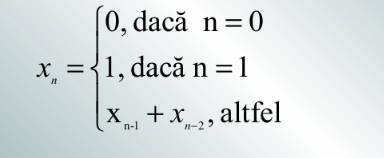

Şirul lui Fibonacci
Fiecare numar Fibonacii este suma celor doua numere Fibonacci anterioare asadar avem urmatoarea secventa:
0 1 1 2 3 5 8 13 21 34 55....
Sirul lui Fibonaci se va defini prin aceasta formula:
Algorituml pentru afisarea primilor n termeni ai sirului lui Fibonacci in C++:
int n,i,f1,f2,f3;
int main()
{cin>>n;
if(n==1)cout<<"1";
else {cout<<"1"<<" "<<"1";
f1=f2=1;
}
for(i=3;i<n;i++)
{f3=f1+f2;
cout<<f3<<" ";
f1=f2;
f2=f3;}
}
Exercitii rezolvate care implica sirul lui Fibonacci din exercitile propuse ca pregatire pentru bacalaureat:
-
Subprogramul fibo are ca paramentru pe n numar natural (n<100). Suprogramul va afisa pe ecran toate numerele ce apartin sirului lui fibonacci mai mici sau egale cu n.
Rezolvare
-
Sa se determine daca numarul a si numarul b sunt termeni consecutivi ai sirului lui Fibonacci
Rezolvare -
Subprogramul fimpar are ca paramentru numarul natural n (n<201). Suprogramul va returna cel de al n-lea termen impar din sirul lui fibonacci
Rezolvare
Modele de exercitii nerezolvate care se bazeaza pe sirul lui Fibonacii:
-
Se citesc doua numere naturale a si b (ambele mai mari decat 1). Calculati si afisati cati termeni din sirul lui Fibonacci se afla in intervalul [a,b].
Exemplu:
In intervalul [20,40] sunt 2 termeni (21 si 34) -
Se citeste un numar natural n. Sa se afiseze cea mai scurta descompunere a lui n ca suma de termeni distincti din sirul lui Fibonacci.
Exemplu: 45 se descompune ca 34+8+3 -
Se da numar natural n. Sa se construiasca si afiseze o matrice cu n linii si n coloane care are pe linile impare primi n termeni ai sirului lui Fibonacci in ordine crescatoare, apoi pe linile pare urmatorii n termeni a sirului lui Fibonacci in ordine descrescatoare.
Exemplu: pentru n=4 se va afisa matricea:
0 1 1 2
13 8 5 3
21 34 55 89
590 377 212 144